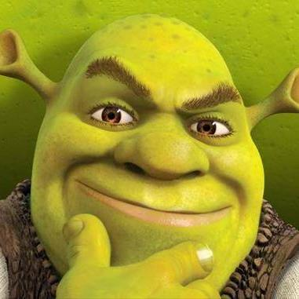

Eh. At risk of turning this into Stupid Culture War Shit, I actually don’t buy (2). I think there’s a meaningful difference between the way male heroic protagonists have traditionally been portrayed in fantasy movies versus the way female heroic protagonists have been portrayed in fantasy movies since 2010 or so [where “fantasy movies” definitely includes superhero stuff]; that this discrepancy represents an ongoing cultural problem for certain kinds of narrative, even if it’s probably fine in any given isolated case; and that Carol Danvers is a really good illustration of the issue.
I know I’m not the first person to point this out, or probably even the dozenth, but…
The Hero’s Journey is an ur-story. It works a particular way, it hits particular beats.
[ – and here we have a brief sidebar while the academic folklorist in me insists on shouting: THIS “UR-STORY” IS ONE PARTICULAR CULTURAL ARTIFACT WITH A LOT OF RESONANCE IN CERTAIN CONTEXTS, IT IS NOT MAGIC OR BIOLOGY OR SOMETHING, NOT EVERY SINGLE GODDAMN STORY IS OR SHOULD BE A REGURGITATION OF CAMPBELL – ]
One important thing is that the hero starts weak, in skill and in spirit, so that over the course of his journey we can watch him grow strong. Another important thing is that his strength-in-skill is achieved as an outgrowth of his strength-in-spirit; he learns some important lesson, he acquires discipline or compassion or courage or some other crucial virtue, and in doing so he comes into his power.
I’m not a movie expert by any means, but my impression is that this pattern plays out with really remarkable fidelity in movies about fantastic hero-figures, especially in heroic origin stories. Luke Skywalker is a whiny cowardly putz who needs to learn to trust the Force before he can be a Jedi. Peter Parker needs to learn that with great power comes great responsibility before he can be a real superhero. Tony Stark needs to learn to care about others. Bruce Wayne has a dark version where he learns the “virtue” of vengeful obsession. Aladdin needs to learn to put virtuous action ahead of his selfish desires. Simba needs to learn to face his fears rather than losing himself in hakuna-matata. Even Steve Rogers, who is in some ways kinda morally perfect from the get-go, needs to learn to stand up for what he believes in rather than allowing himself to be used as a pawn by impersonal forces.
One particular very-narrow instantiation of this pattern is “the hero learns to ignore the haters and believe in himself.” That works, kinda, as a literary Sometimes Food. It has the inherent problem that it tends to sound an awful lot like “the hero just needs to realize that he’s inherently awesome the way he is, and that he doesn’t need to learn anything or cultivate any virtue” – which sort of borks up the underlying themes, and is not a super-compelling moral from a mythic standpoint. I actually can’t think of any culturally-central examples of this particular version playing out with a [male] hero. But I’m sure they’re out there.
With heroines, these days, it’s something you see over and over and over. It’s Rey, it’s Moana, it’s Wonder Woman, and it’s certainly Captain Marvel.
And, yeah, this didn’t happen in a vacuum. Going into this particular cultural moment, there may have been a surfeit of stories about women being torn apart for their character flaws – I was around in the late ‘80s and the ‘90s, I remember all the “career bitch learns to have a heart and care about people” shit – and a dearth of distaff-side power-fantasy confidence. But right now, just as we’re finally seeing the convergence of “lots of awesome culturally-central heroic fantasy stories” and “lots of stuff being made specifically for and about women,” basically every version of the actual Hero’s Journey is being drowned under a thick layer of Yass Queen Slay.
As I understand it, the proper way to round out a rant like this is to make an appeal about The Children. So, sure. The little girls for whom these films are being made, the ones who for the first time are supposed to be learning to see themselves as true heroes, are being fed a mythic diet consisting of nothing but spun sugar. This is neither appetizing, in anything more than the very shortest term, nor beneficial.
One particular very-narrow instantiation of this pattern is “the hero learns to ignore the haters and believe in himself.” That works, kinda, as a literary Sometimes Food. It has the inherent problem that it tends to sound an awful lot like “the hero just needs to realize that he’s inherently awesome the way he is, and that he doesn’t need to learn anything or cultivate any virtue” – which sort of borks up the underlying themes, and is not a super-compelling moral from a mythic standpoint. I actually can’t think of any culturally-central examples of this particular version playing out with a [male] hero.
Hmmm, let’s think…

Other examples include Batman, Superman, Judge Dredd, or Sherlock Holmes.
I’m not sure all your examples up there are actually the same thing. Luke Skywalker doesn’t simply change throughout the movies, we watch him acquire a certain set of Rebel and Jedi skills. He starts at the beginning of Star Wars as a farm boy with no experience in fighting, organizing people, using Jedi powers, swinging a lightsaber, etc, and he slowly acquires and improves those skills throughout the three movies.
We don’t watch Tony Stark start out as a mediocre inventor and then slowly work his way to being a great one at the end of Iron Man 3; He’s already a super confident genius at the beginning of the film. We never see batman go through the “try to stop the bad guy while wearing hockey pads” stage of his career; we see a moment of vulnerability as a child and then immediately cut to him when he’s Batman. Even in Batman Begins he’s 90% of the way there when he goes to see Ras Al Ghul at the beginning of the movie. By the beginning of The Dark Knight The Joker is the underdog.
I don’t think I have ever seen an adaptation of Sherlock Holmes that went, “But what was he like when he was a clumsy beginner detective who made a lot of detecting mistakes?”
These characters have to grow, in some sense, but because they either face an obstacle which itself is so immense that even their own great skill is stymied (e.g. Batman might be a superhero, but can even he beat a genius criminal like The Joker? Can the great Sherlock Holmes beat the Napoleon of Crime?) or because they face a problem which is outside their skill set. (Superman can crush coal into diamonds with his bare hands but boy that Lois Lane sure is a handful!)
So the first thing worth saying here is that not all these stories are Hero’s Journey reiterations even in the broadest and most generous sense. Sherlock Holmes definitely isn’t; he is not the Hero With a Thousand Faces, that’s not what he’s about and never has been; and that’s fine. His stories aren’t even about his development as a character at all. I’m pretty sure the same goes for Judge Dredd, although I confess that I’m not really familiar with him as an actual character rather than a meme.
Beyond that…this is an overly-narrow reading of the “coming into your power” concept. It’s true that Iron Man’s literal “power” is “being really smart and good with technology,” and he is that thing from the very beginning, but…the Iron Man origin story definitely starts with “Tony Stark is a man who can’t really deal with his problems,” ends with “Tony Stark is an effective hero,” and the narrative sets things up such that getting from A to B involves learning an important moral lesson. The whole point of the [since-1980-or-so] interpretation of Batman is that we go directly from “criminals are a cowardly and superstitious lot, I shall become a bat” to terrifyingly effective crime-fighting; Bruce underwent a spiritual development in the vein of “I will sacrifice my humanity to be an avatar of fearful justice and avenge my parents,” and it worked, like black magic. We tend to skip over the training sequences with him precisely because they don’t underlie the moral narrative.
I’m not sure whether you can really call Shrek an instantiation of the Hero With a Thousand Faces, but to the extent that you can, he sure does need to learn important moral lessons about friendship and teamwork and love before he can be effectively heroic.
Superman is a super-weird edge case in a variety of ways.
I mean, I feel like this raises the question of why, then, we’d assume the films you’re talking about are, in fact, failed attempts at The Hero’s Journey rather than successful attempts at whatever kind of story Superman is, or successful attempts at something else altogether.
I’ve not yet read Campbell’s book, but I’ve always been really skeptical of the thing because it seems to me, as a layman, that in looking for similarities between stories it often draws the lines in arbitrary places.
Like,
The whole point of the [since-1980-or-so] interpretation of Batman is that we go directly from “criminals are a cowardly and superstitious lot, I shall become a bat” to terrifyingly effective crime-fighting; Bruce underwent a spiritual development in the vein of “I will sacrifice my humanity to be an avatar of fearful justice and avenge my parents,” and it worked, like black magic. We tend to skip over the training sequences with him precisely because they don’t underlie the moral narrative.
I mean… we don’t skip over any of that stuff with Luke Skywalker; by the end of A New Hope he’s nowhere near where Batman is in the first 15 minutes of every Batman movie. Arguably, he goes through four movies worth of stuff and then dies without reaching the point Batman is at at the beginning of every Batman movie. We watch Luke for several movies worth of stuff that every Batman movie has just glossed over. I don’t think that’s actually a trivial difference.
I’m at kind of a disadvantage from not having seen a lot of these movies other than Star Wars, but I think if they cause discomfort it’s for reasons outside of their structure.
First of all, we all now know that our opinions on these movies will be used as a bludgeon against us by assholes with axes to grind. “I thought Rey was kind of bland and dull” “You know why, right? It’s because you’re a sexist”; “I really liked Rose!” “Typical SJW!”
That’s never fun, and the anticipation of the work that will go into trying to express an honest opinion on these movies that won’t be used as evidence against us already causes stress.
Second, there’s something I can’t quite express, it’s something to do with branding and propaganda.
Okay, like, in The Force Awakens and The Last Jedi, JJ Abrams and Rian Johnson make the Nazi overtones of the bad guys even more obvious while simultaneously making the bad guys more laughable and pathetic then they have ever been. Kylo Ren is portrayed as a scared child who has given up on himself and Hux is a puffed up little gerbil who angrily insists on his own grandiosity even thought literally nobody, including the other First Order characters actually respects or even really fears him. Darth Vader was incredibly cool and Emperor Palpatine was scarily competent and in control, but the new movies do everything to undercut their villains. Except Snoke, I guess, but Snoke is a big yawn.
And there’s something Captain Planet-esque about the whole thing. And what I mean is, remember Captain Planet? That show from the early 90s where the earth spirit, Gaia, summons five teenagers with attitude to wield magic rings to create Captain Planet, a superhero who fights pollution, and also villains who pollute, like Hoggish Greedly, a literal pig man who seems to pollute for its own sake, like it’s his calling or something.
And one of the kids was this guy named Wheeler, who came from the US, and he was the one who was always wrong. He was a loud-mouthed street tough who grew up in tough circumstances and used false bravado to cover his insecurities, but had to learn and change because he was suddenly encountering a wider world then the one he grew up in.
And from a storytelling structure perspective, that’s a perfectly viable, even compelling character, but he was so damn obnoxious when you were a kid watching that cartoon, because you could see the gears. He was the way he was because they needed somebody to be wrong so that the other characters could exposit the correct opinions, and as you get older you realize that the guy who was always wrong and kind of too aggressive and needed to be patiently taught by the more mature types, well, he couldn’t be the black African guy or the South American guy, because yikes, and nobody was thinking outside the box enough to make the Asian chick a streetwise tough.
And there’s a sort of similar, “Of course in the teens we have to portray Nazis as pathetic man-children who are going to be schooled by the tough, unbreakable real strength of women and minorities.”
And what I have trouble expressing is that it’s not that that’s a bad message or that it’s insincere, it’s that you can see the gears turning. It’s that there’s a strong undercurrent of “It had to be structured this way, because other ways of doing it would be too conservative or too bizarre for the audience that we’re trying to cultivate for the Star Wars brand.”
Or it’s like that famous and staggeringly inane Coke ad:
In retrospect everybody in this ad looks like they’re in a cult, but I assume this wasn’t made by war profiteers or Klingons or anything, I’m sure they’re at least vaguely in favor of world peace and harmony and love and shit.
And maybe we’ve all been moved by something equally as maudlin or blunt.
But not by this, because it’s selling us fucking Coca Cola.
Blockbuster movies are really strongly branded right now. Everybody wants an MCU and so nerd movies often feel like advertisements for themselves and their own sequels, and in that context it’s hard not to see this kind of female empowerment as a kind of woke branding. It’s not that it’s bad, it’s that even as you watch the movies you can hear the marketing team talk about how this is the kind of message that resonates with key demographics.
Anyway, Judge Dredd is a really good comic series and you should read it.
Mrmph. Whatever else may be true – the thing at which you’re gesturing, with the gears turning etc., is certainly a real thing. It’s come close to ruining my ability to enjoy modern fantasy novels, even when they’re making narrative moves that are totally legit (narrative moves that I would have found actively delightful and inspiring a decade ago!), a fact that causes me no end of bitterness and angst.
I still think that something important about story structure is also going on, though. Or, rather, something important about story concepting.
Like…yes, you’re correct, in many important ways Batman stories don’t fit the model. Superhero stories in general deviate from the model a lot, because they don’t rise and fall in a normal narrative arc, they just keep going and going and going in an endless sprawl so that the superhero can have an endless career and fight a million villains. Insofar as they do have the Campbell-nature, it tends to be compressed right near the beginning, when we see the heroic origin play out.
Because, if the Hero’s Journey is “about” any single thing, it’s about exploring what it takes to become a hero.
Because it’s an ur-metaphor. The hero of the Hero’s Journey is always you. His trials are representations of the obstacles in your life. His powers are representations of the tools you can use to be effective in the world. This is folklore psychology at its very most stripped-down.
(Sherlock Holmes isn’t you and never was – even if many actual individuals reading this probably have a lot more in common with him than with, say, Luke Skywalker. Same goes for James Bond. When you read about them or watch them on the screen, the point isn’t to feel any kind of resonance, it isn’t to see your own internal struggles reinterpreted in mythic form, it’s to watch a bizarrely competent person doing his thing. But the comics are there to remind you that you, yes you, could be Batman. Y’know. If everything lined up right. And even as things are, it’s not hard to see how the Batman identity is a stand-in for a certain way of being in the world…)
The core lesson of that ur-story is often something like “if you learn the right lesson or acquire the right tool, you can be awesome.” If you get over your unwillingness to commit. If you become disciplined and study kung fu. Etc. And it turns out that, gosh!, it’s actually true. Very often you can do things effectively, if you think about it in the heroic mode, if you set yourself to mastering your internal demons and building the skills that you’ll need.
The story that is “you can be awesome if you just unleash your preexisting inner awesomeness” is…less often true. It rings hollow, a lot of the time.